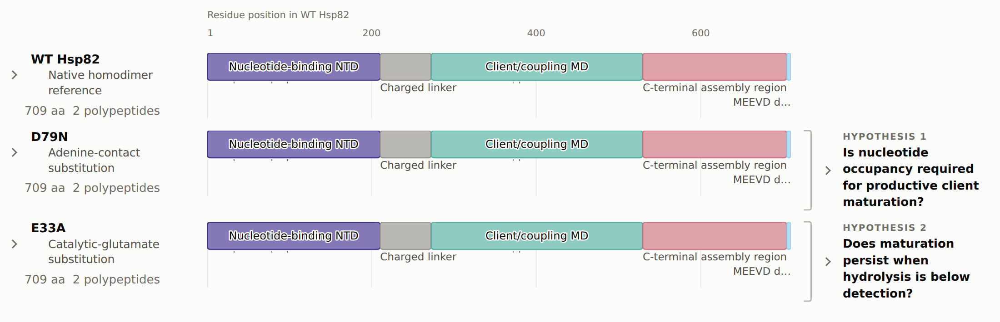
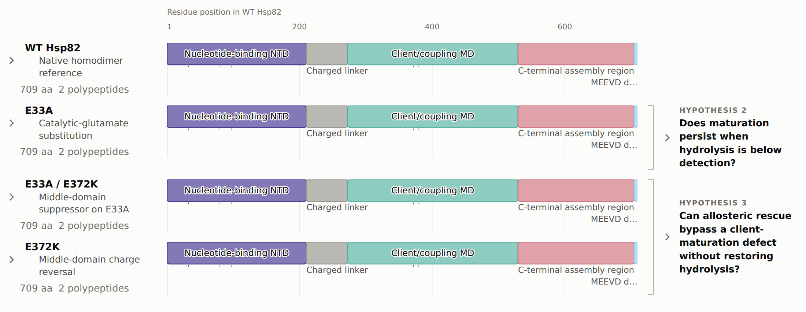

The Hsp82 library
The library also includes K98A and E33A/K98A, which ask whether returning to the ADP state matters when hydrolysis is impaired, and R380A, which asks whether ATP turnover can be separated from client maturation.
Construct Maps / ATP binding and hydrolysis in Hsp90 client maturation
Budding yeast can grow with Hsp82-E33A as its sole source of Hsp90 1. The mutant binds ATP, but its ATPase activity is below detection. The ATP-binding-defective D79N mutant, by contrast, fails to support growth 2. These observations distinguish the nucleotide requirements for viability while leaving open how individual clients respond to the same mutations. An earlier study found reduced activation of the client kinase v-Src in cells expressing E33A 1. A strain can therefore remain viable despite a measurable defect in client maturation.
The prompt
Design a library of HSP90 variants to distinguish the roles of ATP binding and ATP hydrolysis in client maturation.
The Hsp82 library
The library also includes K98A and E33A/K98A, which ask whether returning to the ADP state matters when hydrolysis is impaired, and R380A, which asks whether ATP turnover can be separated from client maturation.


Reidy and colleagues found that E372K suppressed growth defects in Hsp82-E33A without restoring detectable ATP hydrolysis 2(Fig. 5, Fig. 6). The library pairs that published double mutant (e33a-e372k) with wild type and both single mutants. Measuring the same client across all four would show whether the growth rescue extends to client activity. e372k alone supplies an important control: if it also increases activity in wild-type Hsp82, an improvement in the double mutant could reflect a more general effect on that client.
Even a full rescue would not settle the mechanism. In E33A, E372K also restores stronger closed-clamp stabilization by ATP-γ-S 3(Fig. 3), so the rescue could come from altered conformational coupling instead of a bypass of hydrolysis.
e33a-e372k from the design recorde33a-e372k. Introduce the documented suppressor into the hydrolysis-defective background.